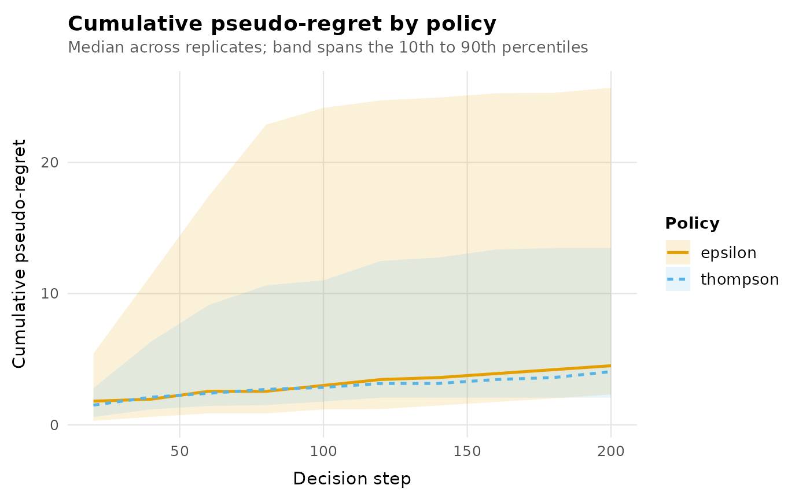
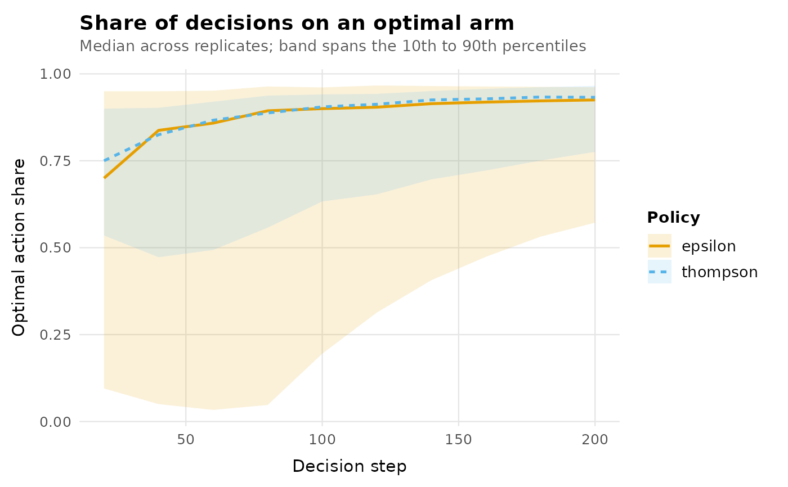

Standard diagnostic plots for a bandit_result. Every plot uses
theme_banditlab() and the package's accessibility-checked
scale_colour_banditlab() palette by default, and returns a plain
ggplot object: add + ggplot2::theme(...) or a different scale
afterwards to change anything.
Arguments
- object
A
bandit_resultfromrun_experiment().- metric
One of:
"cumulative_regret"Median cumulative pseudo-regret over time per policy, with a 10th to 90th percentile ribbon across replicates. Requires checkpoints or trajectories, and known expected rewards.
"cumulative_reward"Same display for cumulative reward.
"optimal_action_share"Share of decisions selecting an optimal arm, over time.
"arm_share"Overall selection share per arm and policy. Requires trajectories.
- ...
Unused.
Accessibility
Colour is never the only channel that carries policy identity: line
plots also vary linetype, and the bar plot also varies bar position
along the arm axis. The palette supports up to seven policies in a
fixed order (see scale_colour_banditlab()); plotting an eighth
policy in one call is an error rather than a silent fallback to a
non-accessible default. as_tibble(object) gives the exact values
behind any plot.
Examples
env <- bandit_bernoulli(c(a = 0.2, b = 0.5))
result <- run_experiment(
env,
list(epsilon = policy_epsilon_greedy(0.1), thompson = policy_thompson()),
horizon = 200, replications = 10, seed = 1,
checkpoints = seq(20, 200, by = 20)
)
autoplot(result)

autoplot(result, metric = "optimal_action_share")
